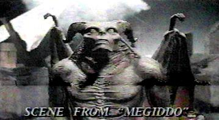

|
|
Megiddo / Omega Code 2
I was wrong. In my review of Omega Code, I said "it would be difficult to produce a more secularized (non-religious) movie about Bible prophecy". TBN may have done just that with Megiddo. If you were disappointed with Omega Code and it's lack of a gospel message of salvation through Jesus Christ, then prepare yourself for even more of the same with Megiddo.
Megiddo devotes much of its plot to developing the background of Stone Alexander (the Antichrist character). It begins with how Stone always hated his brother David Alexander, even as a child, because his mother died giving birth to him. Stone, under Satan's influence, even tried to murder his brother at three months by setting fire to the crib. Because of this act, the young Stone is sent to a military academy, where several scenes depict his training there over some 10 years.
As Stone receives his military training, his brother David enters politics, and as Stone becomes head of the European Union, David becomes a Congressman and then Vice President, setting the stage for the final confrontation between these brothers. When the President refuses to bend to the demands of Stone Alexander, he is disposed of like the others who oppose the New World Order. This makes David Alexander the President, who carries on heroically opposing his brother's megalomaniac plan of world union under his dictatorship.
In one scene, President David Alexander is drawn into a church, and as he enters the pastor is quoting Revelation. The pastor and congregation soon begin to chant "Save us, Save us". Who do they want to save them? Could it be Jesus? Sadly no, they all have turned to David Alexander, and are asking him, the President, to save them as if he were their Messiah. Salvation does not come from Presidents, Priests, Popes or Pastors, it comes from faith in the Lord Jesus Christ, and sadly TBN's Megiddo fails to deliver this gospel message.
When faced with a plague of locust / flies that issue from Stone's mouth, the renegade factions of the world (China, the U.S. and Mexico) seem to join the New World Order, gathering at Megiddo to meet with Stone, but betray him and begin an attack on his troops and command post. At this point Satan emerges from Stone's body and takes charge of the attack against the rebels. The form that TBN used to depict Satan, a bat-winged gargoyle-like creature, is reminiscent of Disney's Fantasia and Night on Bald Mountain.
|  |
|
Image Copyright © 2001 by TBN films |
When it seems that Satan has vanquished the rebels and has victory in hand, he is defeated in a scene that represents the second coming, and thrown into a lava river where he is chained in torment. If you have seen Raiders of the Lost Ark, and the scene where the Ark of the Covenant is opened, then you have basically seen the effects used to depict the second coming. Raiders had better effects, and after all, they did it first. However, like in Omega Code, Christ is never seen in the second coming scene of Megiddo.
Megiddo, like Omega Code, again has no apparent Christian characters in it, and the Gospel message of salvation through faith in Jesus Christ (who in Megiddo is only called "the Nazarene") is never explained. The Omega movies two plots have little else in common, since the only character that is common to the two movies is Stone Alexander. Dr. Lane, who was prominent in the previous movie is not seen or even mentioned, and neither is Stone's second in command, Dominic. Still missing from Megiddo is any mention or depiction of the secret rapture, the seeming cornerstone of modern prophecy teaching, and any explanation of 666 or the mark of the beast. The supposed seven year peace treaty with Israel is also not mentioned, neither is the near fatal head wound to the beast. There is so much that is glaringly missing from this film.
The whole plot again revolves around the false teaching that the Antichrist is some non-religious Hitler-like dictator that will arise and take control of the world's governments in an effort to eventually rule in Jerusalem and declare himself to be God. This is known as Futurism, and is an interpretation of prophecy that actually developed in the Roman Catholic Church and gradually infiltrated Protestant teaching over the last 100 to 150 years. It is an interpretation that was totally unknown to the Protestant reformers, all of which rightly identified the papacy as the Antichrist of biblical prophecy.
Boil this movie down and you have a boring first half of character development that eventually progresses to machineguns blazing, helicopter and fighter attacks, and massed troops and tanks in a special effects saturated battle sequence. Just how many helicopters, fighters or tanks can you get into one picture? TBN's Megiddo probably holds the record. But, in the end God apparently wins, with Satan chained in Hell in the bowels of the earth, having finally confessed the "Nazarene" to be Lord (Jesus was raised in Nazareth).
The bottom line: save your money, and don't waste it buying tickets for lost friends, since it portrays false prophecy and does not explain the gospel message. If you really want to see it then don't expect much. It would be better to wait until you can borrow the video from someone. You won't really be missing anything if you wait.
Megiddo a big box office loser - Megiddo's performance at the box office. Megiddo is said to have cost 25 million, 6 million of which is in special effects. Omega Code cost 7.2 million and grossed nearly 12 million. Omega Code's box office figures. In order to break even, Megiddo needed to earn twice what Omega Code did, yet at the end of its ninth weekend, Megiddo had grossed a mere 6 million dollars.
I suspect that about half the Christians who saw their first movie, Omega Code, were simply unwilling to shell out their hard earned bucks on large blocks of advance tickets, for a second fictional TBN end-times fantasy that again lacked a gospel presentation. The emperor still did not have any clothes, and the majority of the Christian audience were smart enough to know it. Megiddo simply had little evangelistic value, and this was apparently fatal to its box office performance, resulting in a staggering loss of nearly twenty million dollars (prior to any video sales, which may reduce the copious red ink).
For comparison, another end-times movie that performed poorly, Cloud Ten's Left Behind, based on the popular book series by Jerry Jenkins and Tim LaHaye, cost 17 to 20 million dollars and grossed a mere $4,221,341 in theaters.
 Who Was Jesus Christ And Why Did He Have To Die?
Who Was Jesus Christ And Why Did He Have To Die?
 What Does The Word Vatican Mean?
What Does The Word Vatican Mean?
 666, The Number of the Beast and the Antichrist.
666, The Number of the Beast and the Antichrist.
 The Deadly Wound of Revelation 13
The Deadly Wound of Revelation 13
 The False Prophet.
The False Prophet.
 The Seal of God and the Mark of the Beast.
The Seal of God and the Mark of the Beast.
 The 70 Week Prophecy of Daniel
The 70 Week Prophecy of Daniel
 The Catholic Origins of Futurism and Preterism.
The Catholic Origins of Futurism and Preterism.
 The Truth About The Rapture
The Truth About The Rapture